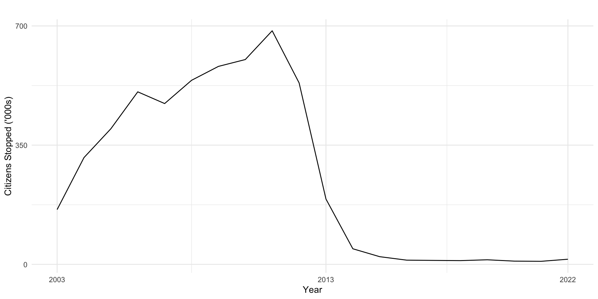
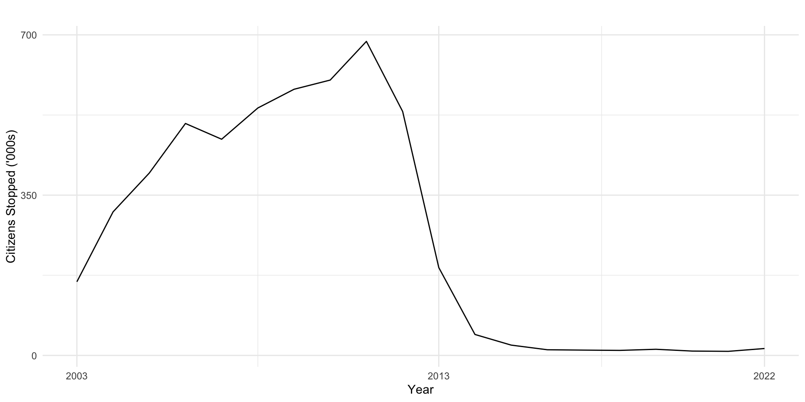

[1] 20[1] 20
Schwab
New York City Police Practice
Many articles about the targeting of Black and Latio young men.
Studies have shown that this has led to mistrust in the police.
I’m not Black.
I’m am Hispanic.
I am not from New York City.
Let’s acknowledge that Race exists and plays a part in the way human being interact with each other.
We might get a bit uncomfortable.
Introduce you to the data.
Pose a question that I have about stop and frisk.
Give you Data Frames with data to answer the question one way.
You’ll order them with a partner.
You’ll make up puesdo code to explain data transformations.
I’ll give you the real code arrows.
We’ll repeat the process of data transformation with the real code.
Time for questions.
Here’s NYC’s website with the stop and frisk data.
Each column is a variable
and each row is a stop
Data Dictionaries exist for older data.
New Data variables are more clear.
The variable names are inconsistent across years.
Are Black, Hispanic, groups more likely to be stopped by police officers than other groups in 2011? Does this change as the total counts of stops decreases to 2021 levels?
This Stop and Frisk policing strategy came into force under Michael Bloomberg governor from 2003 to 2013.
During the end of Michael Bloomberg’s tenure as governor there was a public out cry of the ____ of this policy.
The policy’s discrimination leads to distrust in police.
[1] 20[1] 20
Little envelopes Data 2021
Little envelopes Functions
Here’s the demographics of NYC1:
Black: 23.4 %
Latino: 28.9%
White: 39.8%
New functions:
select(), mutate(), arrange(), rename()
Old funtions:
names(), recode(), count()
Make a new r project.
Download 2011 csv from this site. Extract it to the same folder as your rproj.
Make a new document and put this in a chunk.
read_csv("2011.csv")
Are Black, Hispanic, groups more likely to be stopped by police officers than other groups in 2011? Does this change as the total counts of stops decreases to 2021 levels?
https://www.census.gov/quickfacts/fact/table/newyorkcitynewyork/PST045222↩︎